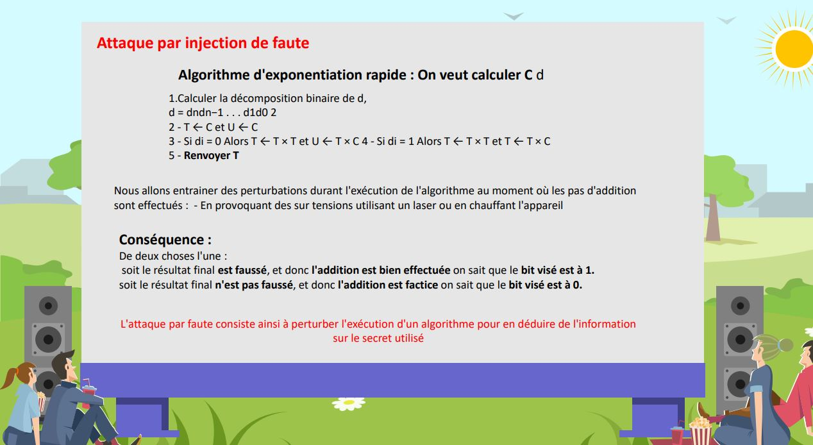
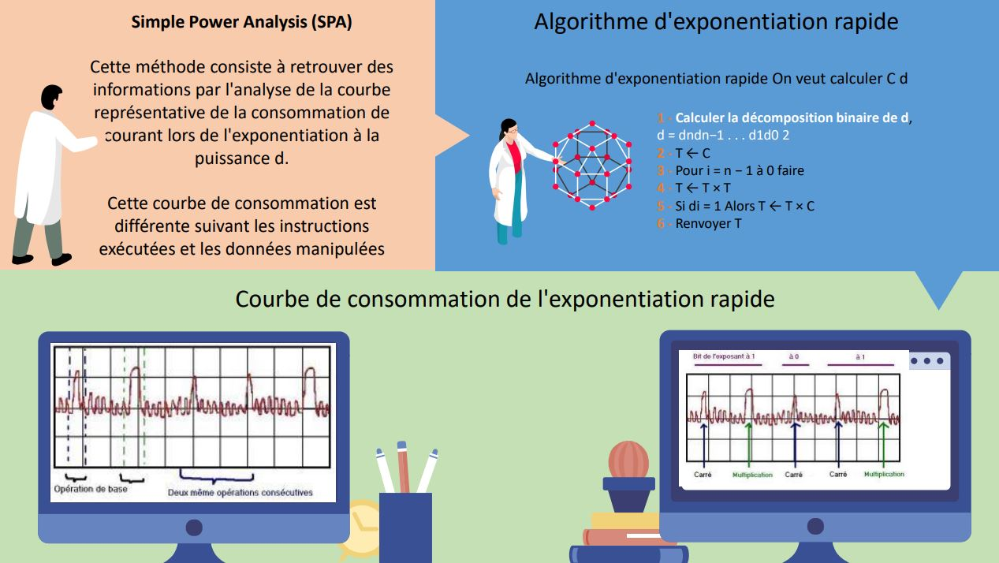
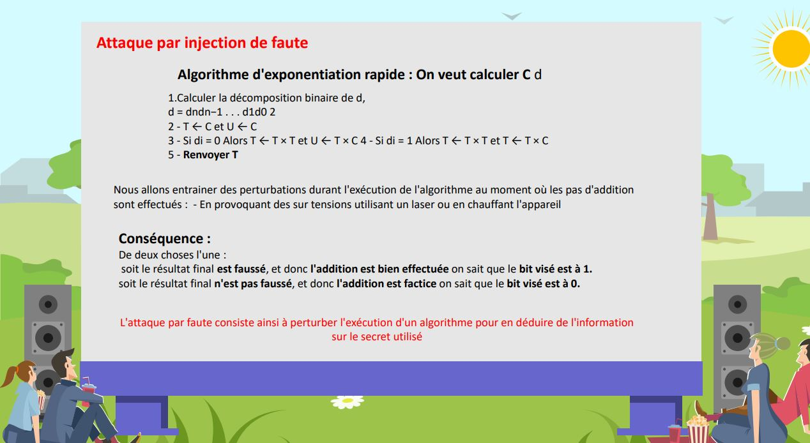
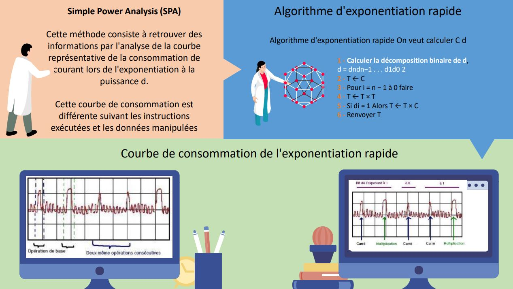

Sécurité Renforcée des Cartes à Puce : Analyse Approfondie de l'Architecture, des Menaces et des Contremesures
 



Naviguer à travers les Complexités : De la Robustesse des Composants à la Protection Contre les Attaques Avancées
- Categorie: Memoire d'intégration au CNAM : Conservatoire national des arts et métiers
- Pour: : Conservatoire national des arts et métiers
- Sujet: : Le sujet de ce mémoire s'articule autour de la sécurité des cartes à puce, englobant une analyse approfondie de leur architecture, de leur fonctionnement, et des divers types d'attaques envisageables sur leur matériel. Un examen méticuleux a été entrepris dans ce domaine pour démystifier la complexité inhérente aux cartes à puce.
Résumé de l'Étude sur la Sécurité des Cartes à Puce
Compte tenu des nombreux domaines sensibles de l'utilisation des cartes à puce (banque, médical, téléphone), certaines recherches se sont concentrées sur la sécurité et les attaques possibles sur ces appareils, ce qui constitue le cœur de ce mémoire. En effet, au cours de ces dernières années, des attaques de plus en plus sophistiquées ont été développées pour extraire des données sensibles et perturber les fonctions prévues des cartes.
Tout au long de ce mémoire, nous avons exploré en détail l'architecture physique des cartes à puce pour mieux comprendre les vulnérabilités lors d'attaques physiques. Nous avons également fourni une intuition nécessaire pour comprendre les objectifs des attaquants grâce à ces attaques.
Pour ce faire, nous avons exposé le fonctionnement des cartes à puce, couvrant leur communication et les composants matériels de l'architecture, mettant en relief l'aspect fonctionnel des considérations en sécurité et soulignant la nécessité d'exprimer des garanties de sécurité. En effet, les composants de sécurité tels que les cartes à puce sont des types spécifiques de matériel qui fournissent des attributs de sécurité.
Pour garantir que ces fonctionnalités contre un large éventail d’attaquants puissants, des règles strictes ont été adoptées, telles que des normes ou des spécifications communes.
Des laboratoires dédiés, tels que les CESTI, jouent un rôle crucial dans l'évaluation de la sécurité de ces composants dans le cadre de cette réglementation. Une partie de cette évaluation consiste à déterminer la robustesse des composants en utilisant un équipement dédié pour prévenir différentes attaques (lasers, injecteur électromagnétique). L'implémentation de ce mémoire s'est particulièrement intéressée à la protection des cartes à puce par la standardisation, les normes et la certification. Mais il faut retenir que les composants de sécurité, parce qu’ils contiennent des informations confidentielles, font l’objet d’attaques.
Celles-ci tentent généralement de violer la confidentialité, l'intégrité ou l'authenticité des données protégées par des algorithmes cryptographiques intégrés à ces composants. Les attaques dites matérielles ou physiques exploitent les faiblesses de ces algorithmes dans la mise en œuvre matérielle.
Je me suis donc intéressé aux différentes attaques sur les composants qui protègent des informations confidentielles, parmi ces attaques, celles dites par « canaux cachés » (« Side Channel Attacks »), qui sont particulièrement efficaces : elles utilisent la corrélation qui existe entre les données traitées (dont celles qui sont sensibles) et la consommation, le rayonnement électromagnétique ou le temps de réponse du composant.
Un autre type d'attaques, les « injections de fautes », consiste à modifier délibérément le fonctionnement du circuit pour contourner les protections logicielles et matérielles destinées aux informations sensibles. Par exemple, le fonctionnement du composant peut être affecté grâce à l'éclairage laser, modifiant la tension d'alimentation ou la fréquence d'horloge. Un troisième type d'attaques, plus difficile à mettre en œuvre, consiste à analyser la conception de la puce à l'aide de procédés invasifs tels que l'abrasion, la gravure chimique, le laser, le SEM, etc.
Détectez ensuite le signal par lequel passent les informations secrètes (notamment en raison du faisceau d'ions focalisé). Face à l’ensemble de ses attaques des protections qui ont été proposées ces dernières années pour contrer celle-ci. Deux types de protections sont principalement mis en œuvre aux attaques par injection de faute. La première consiste à détecter les tentatives d'injection de fautes, puis à appliquer une stratégie de réponse appropriée lorsqu'une attaque se produit.
Pour cette raison, des capteurs et des mécanismes de détection d'erreur sont communément proposés pour détecter les changements anormaux dans l'environnement du circuit. Les réactions vont de la simple coupure de la communication à l'effacement complet des informations stockées dans la mémoire. Le deuxième type de protection vise à augmenter la robustesse du circuit aux différentes attaques. À cette fin, des méthodes de correction des erreurs (également basées sur la redondance) et des équipements techniques tels que des couvercles métalliques et des filtres sont utilisés.
Les contre-mesures proposées pour contrer les attaques par canaux cachés. Il s’agit soit d’ajouter du bruit sur les canaux soit de réduire le signal informatif. Enfin viens, les contre mesure matérielles avec plusieurs solutions proposées pour éviter la réalisation d’attaques.